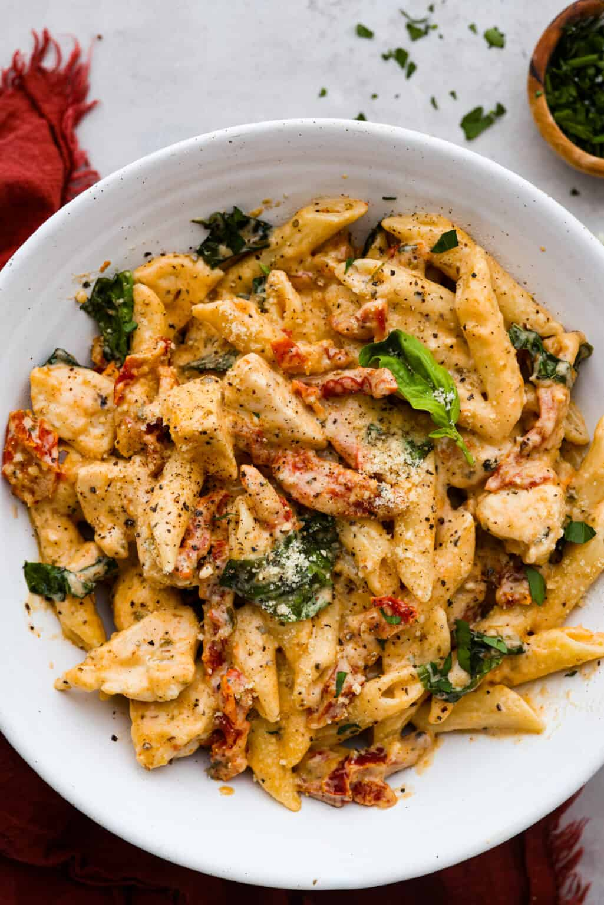

Home
Marry Me Chicken Pasta

Ingredients
- 1.5 lbs Chicken Breast
- 10 ounces penne pasta
- 1 tablespoon olive oil
- 3 tablespoons butter
- 2 tablespoons minced garlic
- 3 tablespoons flour
- 2 cups chicken broth
- 1 cup heavy cream
- 1 cup grated parmesan cheese
- 1 cup diced sundried tomatoes
- 1/2 teaspoon salt
- 1/4 teaspoon pepper
- 1 teaspoon paprika
- 2 tablespoons italian seasoning
Instructions
- Cook the penne pasta according to the package instructions
- Cut the chicken into bite sized pieces and season with salt and pepper
- In a large skillet, heat olive oil over medium-high heat. Add the chicken and cook for 6-8 minutes, until browned and cooked through
- Transfer the cooked chicken to a plate and set aside
- In the same skillet, add butter and saute the minced garlic until fragrant. Add in the flour and stir to make paste
- Stir in the chicken broth, heavy cream and parmesan cheese
- Add and mix in the sundried tomatoes, paprika and italian seasoning
- Simmer the sauce until it thickens
- Return the chicken and pasta to the skillet and mix well